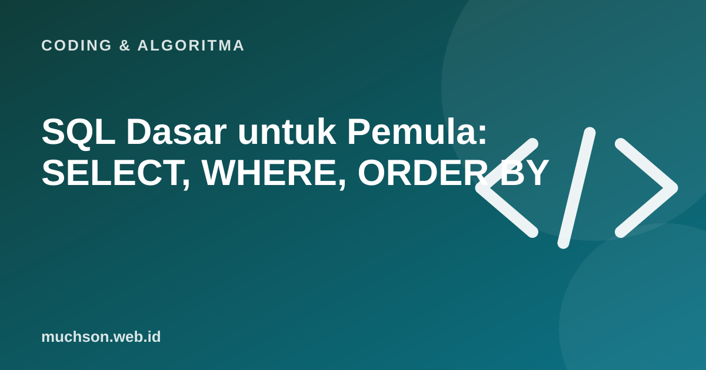

Beranda › Artikel › Coding & Algoritma
Coding & AlgoritmaSQL Dasar untuk Pemula: SELECT, WHERE, ORDER BY
SQL adalah bahasa untuk bertanya kepada database. Dasar-dasarnya mengejutkan sederhana dan terbaca hampir seperti kalimat. Di bawah ada tabel mini: ubah pilihannya dan lihat query SQL beserta hasilnya muncul.

Tabel adalah baris dan kolom
Database relasional menyimpan data dalam tabel. Setiap baris mewakili satu catatan (misalnya satu siswa), dan setiap kolom mewakili satu atribut (nama, kelas, nilai). SQL memungkinkan Anda memilih kolom, menyaring baris, dan mengurutkannya.
Empat kata kunci utama
| Kata kunci | Fungsi | Contoh |
|---|---|---|
| SELECT | Memilih kolom yang ditampilkan | SELECT nama, nilai |
| FROM | Menentukan tabel sumber | FROM siswa |
| WHERE | Menyaring baris | WHERE kelas = 'X-A' |
| ORDER BY | Mengurutkan hasil | ORDER BY nilai DESC |
SELECT nama, nilai
FROM siswa
WHERE nilai >= 80
ORDER BY nilai DESC;Langkah berikutnya
- COUNT, SUM, AVG: menghitung jumlah, total, dan rata-rata.
- GROUP BY: mengelompokkan, misalnya rata-rata nilai per kelas.
- JOIN: menggabungkan dua tabel yang berhubungan.
- INSERT, UPDATE, DELETE: menambah, mengubah, menghapus data.
Hati-hati
Perintah UPDATE dan DELETE tanpa WHERE mengubah atau menghapus seluruh baris. Selalu uji dengan SELECT lebih dulu pada kondisi yang sama.
Tanya jawab
SQL atau NoSQL?
SQL (relasional) cocok untuk data terstruktur dengan relasi. NoSQL cocok untuk data fleksibel atau skala tertentu. Banyak aplikasi memakai SQL, dan PostgreSQL termasuk yang paling populer di kalangan developer.
Apakah SQL sama di semua database?
Dasarnya sama. Ada perbedaan dialek pada fitur lanjutan antar database seperti MySQL, PostgreSQL, dan SQLite.
Bagaimana cara berlatih tanpa database?
Gunakan SQLite atau layanan latihan SQL di browser, atau demo seperti di artikel ini.